豐龍聖道堂攜手吉安 捐贈救護車物資惠鄉親
台中先天豐龍聖道堂與蘇玉枝慈善基金會，在吉安鄉舉辦公益藥師法會暨救護車捐贈典禮，捐贈頂級救護車「地母7號」予消防單位，並發放民生物資關懷820戶弱勢家庭，展現長期對花蓮的深厚關懷與支持。…
閱讀全文 →台中先天豐龍聖道堂與蘇玉枝慈善基金會，在吉安鄉舉辦公益藥師法會暨救護車捐贈典禮，捐贈頂級救護車「地母7號」予消防單位，並發放民生物資關懷820戶弱勢家庭，展現長期對花蓮的深厚關懷與支持。…
閱讀全文 →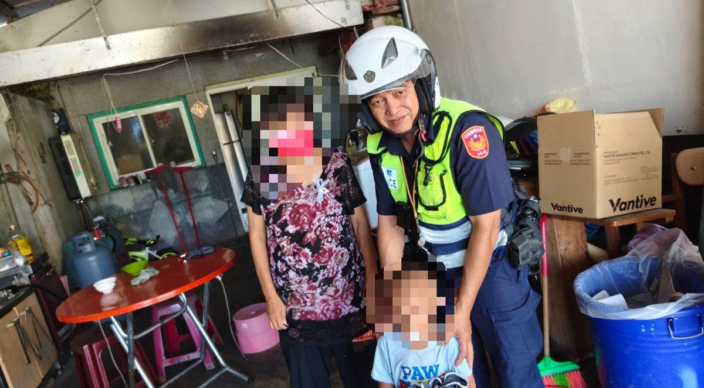
花蓮縣新城分局富世派出所警力執行勤務時，發現一名3歲幼童赤腳獨自在台8線旁徘徊，疑似與家人走散。員警立即上前安撫並將幼童安置於巡邏機車，沿著幼童行走方向逐戶詢問，並透過地方社群協助辨識身分。經熱心民眾指認後順利確認幼童身…
閱讀全文 →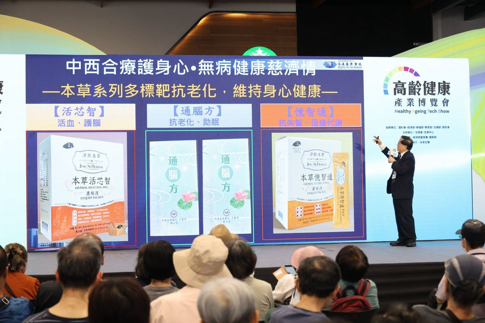
花蓮慈濟醫院院長林欣榮於高齡健康產業博覽會發表中西醫精準合療最新解方，透過基因檢測、腸腦軸線食療研究及中草藥研發，有效對抗失智症與巴金森氏症等腦部退化。運動釋放肌動蛋白，啟動神經修復機制，帶來腦部逆齡新希望。…
閱讀全文 →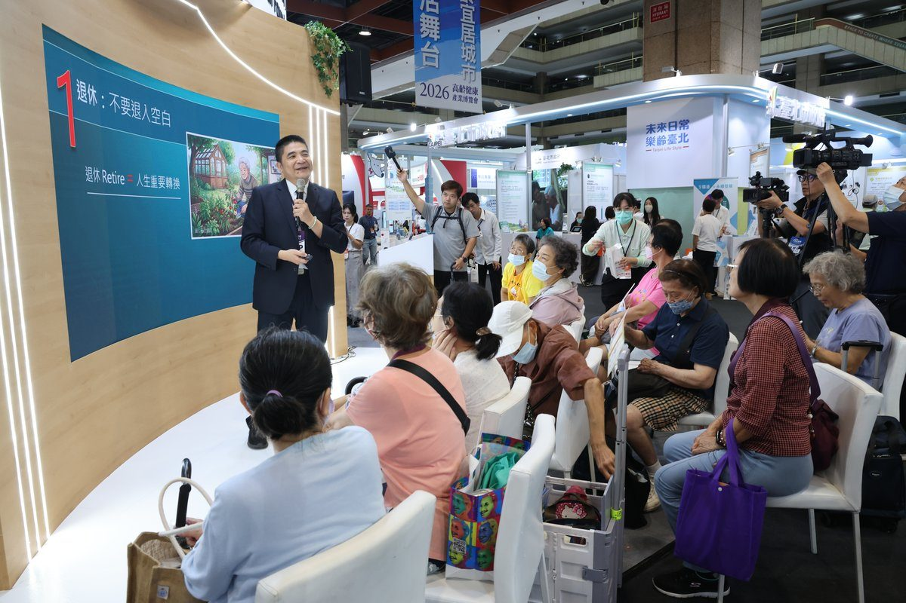
花蓮慈濟醫院羅慶徽副院長於台北世貿高齡健康產業博覽會上，深入剖析健康老化的七大核心策略。從退休生活規劃、睡眠品質提升，到慢性病管理與人際連結，提供實用建議，助您構築樂活有意義的銀髮人生，掌握活得穩又精彩的秘訣。…
閱讀全文 →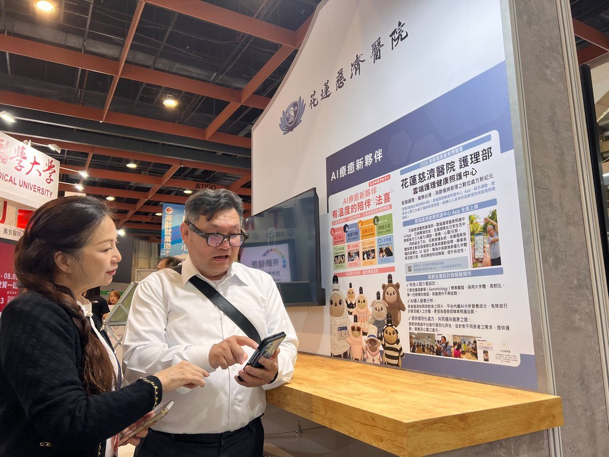
花蓮慈濟醫院於高齡健康產業博覽會上，展示「雲端護理健康照護中心」與AI療癒機器人「法喜」的創新應用。該中心透過直覺化介面與AI飲食分析，提供長者客製化健康管理，搭配情感陪伴機器人，全面提升高齡照護品質，讓科技更有溫度。…
閱讀全文 →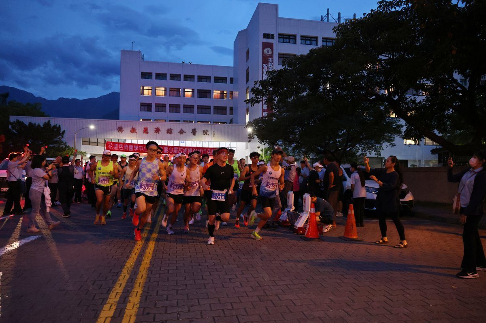
花蓮慈濟醫院慶祝40周年院慶，擴大舉辦千人路跑活動，近千名跑者與健走民眾齊聚，從清晨星光跑向陽光，象徵守護健康與醫療希望。花蓮慈院林欣榮院長與各界人士共襄盛舉，展現醫院深耕東部醫療的決心與活力，系列慶祝活動持續進行。…
閱讀全文 →
花蓮吉安鄉立幼兒園舉辦新生座談會，透過一日作息體驗與校園巡禮，協助新生與家長熟悉環境，緩解入園焦慮。適逢父親節，幼童齊聲祝福感動家長，鄉長游淑貞期許親師協力，共創孩子快樂成長的優質學習環境。…
閱讀全文 →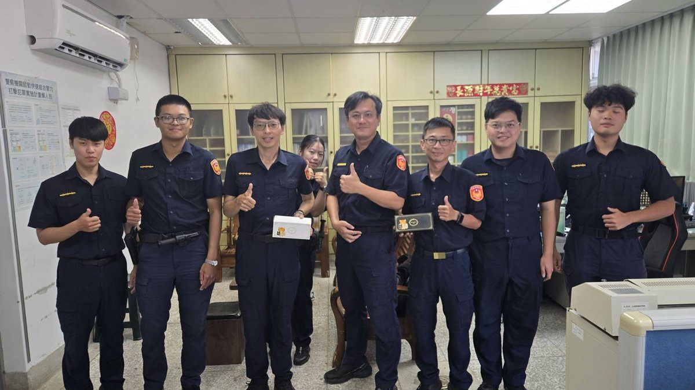
花蓮縣警察局新城分局在父親節前夕，特別準備生乳捲等幸福小物，向長期為家庭、社會及警政工作奉獻的警察爸爸們表達感恩與敬意，期盼透過溫馨舉動，慰勞警爸們的辛勞付出，並祝福所有父親節快樂。…
閱讀全文 →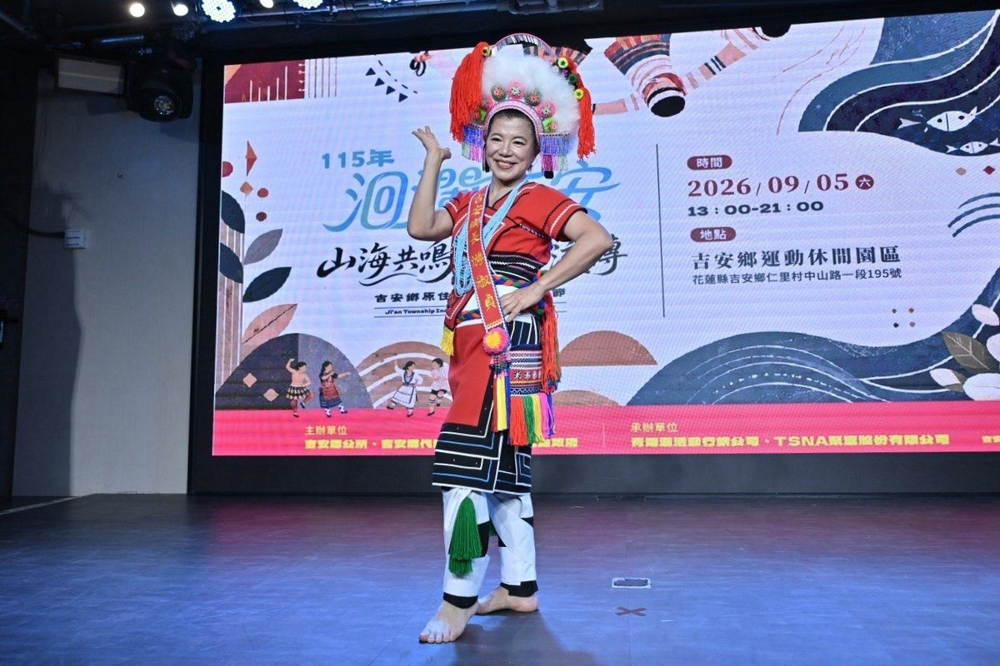
花蓮吉安鄉年度盛事「山海共鳴•族音流轉」原住民族聯合豐年節將於9月5日登場。吉安鄉長游淑貞特別邀請韓國啦啦隊女神河智媛擔任宣傳大使，兩人共同亮相，期望透過國際影響力將吉安文化推向世界，並力促花蓮與韓國直飛航班，增進觀光交…
閱讀全文 →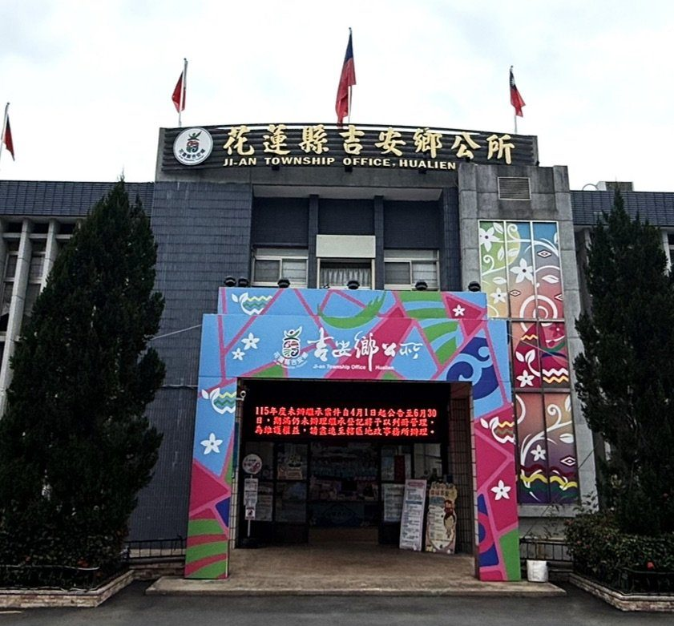
吉安鄉公所針對吳姓副主任酒駕事件，強硬表態「零容忍」立場，其本人已主動請辭獲准。鄉長游淑貞強調公務員應以身作則，呼籲全民共同遵守交通法規，杜絕酒駕行為，保障用路人生命安全。…
閱讀全文 →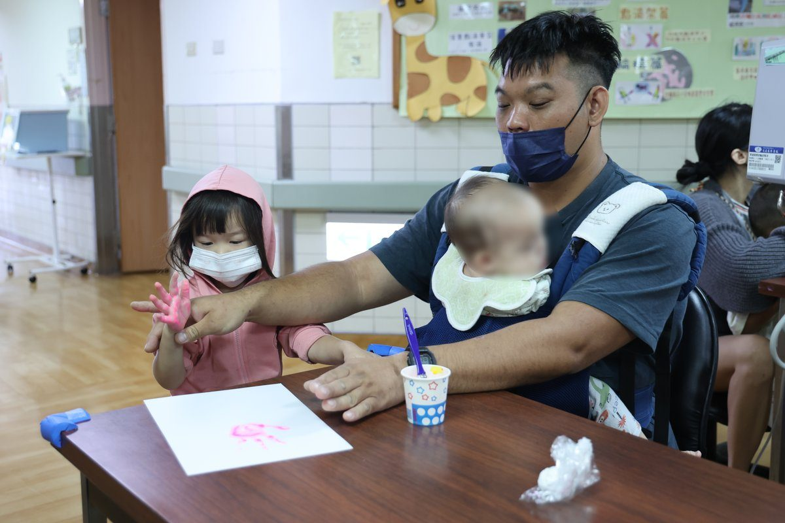
花蓮慈濟醫院兒科病房於父親節前夕舉辦特別活動，讓住院病童與家長共同創作，感受節慶溫暖。活動中融入防蚊與戲水安全衛教，提升親子健康意識，期盼孩子們在關懷中安心度過暑假。…
閱讀全文 →
花蓮縣吉安鄉仁和社區自主防災成果亮眼，114年度再度榮獲水患自主防災社區評鑑優等殊榮，連三屆肯定其整備、宣導與應變能力。吉安鄉長游淑貞強調凝聚共識、跨域合作，打造更具韌性的鄉城。…
閱讀全文 →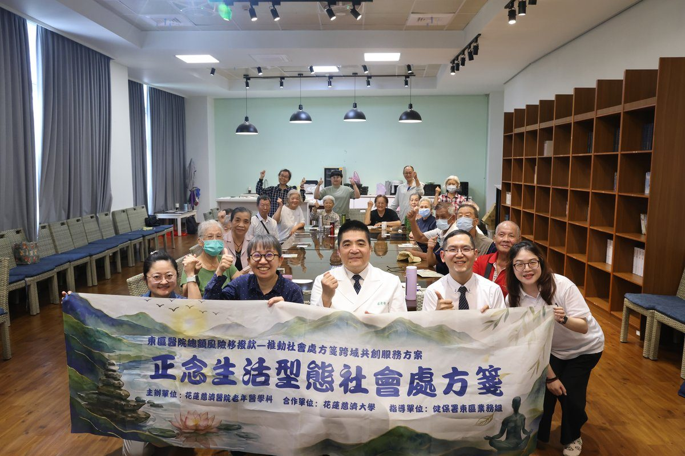
花蓮慈濟醫院推出「正念社會處方箋」，結合門診與深度方案，引導長者培養覺察力、建立健康習慣。透過八週課程，陪伴長者走出孤獨，重塑身心韌性，在花蓮社區中找回生活笑容，促進人際連結與整體福祉。…
閱讀全文 →可樂電子報小編/編輯 「115年舞墨書藝聯展暨專輯發表會」即日起至8月20日於吉安好客藝術村盛大展出。此次展覽 […]…
閱讀全文 →吉安鄉宜昌國小擊鼓隊在全國「客鼓鳴心－鼓王爭霸戰」中脫穎而出，勇奪學生組鼓王、社會組亞軍及特優。吉安鄉長游淑貞特別前往祝賀，肯定學校在鼓藝教育的卓越成就，強調將持續支持學子多元藝能發展，傳承地方文化。…
閱讀全文 →
花蓮慈濟醫院於秀林鄉水源部落推出「社會處方箋」計畫，結合原住民族文化與社區資源，透過培力在地照顧服務員，打造專屬部落的健康促進模式，旨在提升居民生活品質與整體福祉。…
閱讀全文 →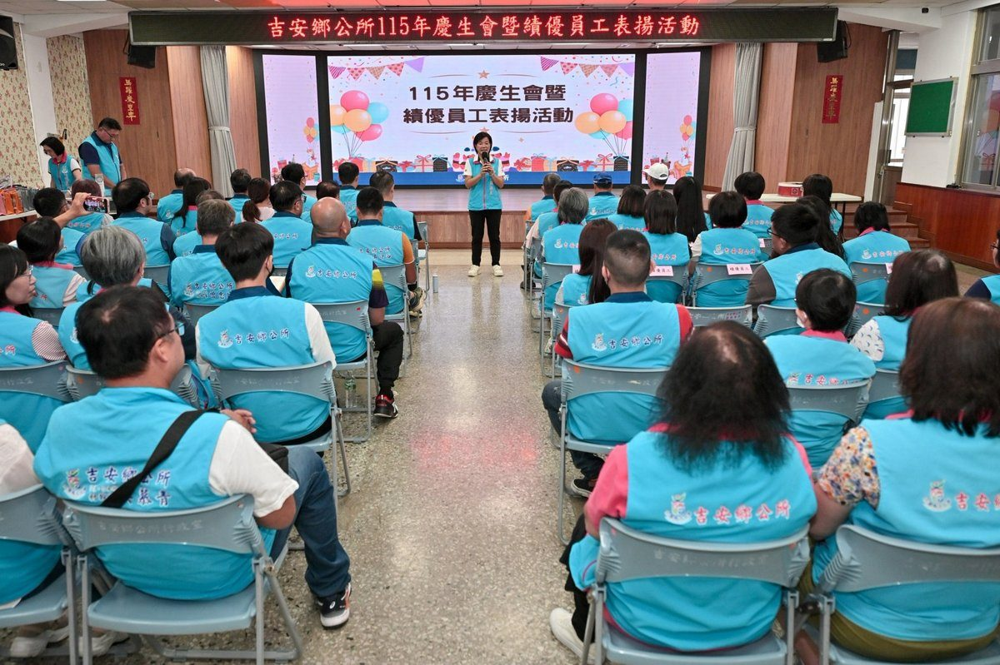
吉安鄉公所舉辦慶生暨績優員工表揚活動，鄉長游淑貞肯定83位壽星與15位績優員工的付出，強調公所致力於營造友善職場。此次活動展現吉安鄉在各項評比中屢獲肯定的成果，並重申未來將持續提升施政品質，為鄉親提供更優質的公共服務。…
閱讀全文 →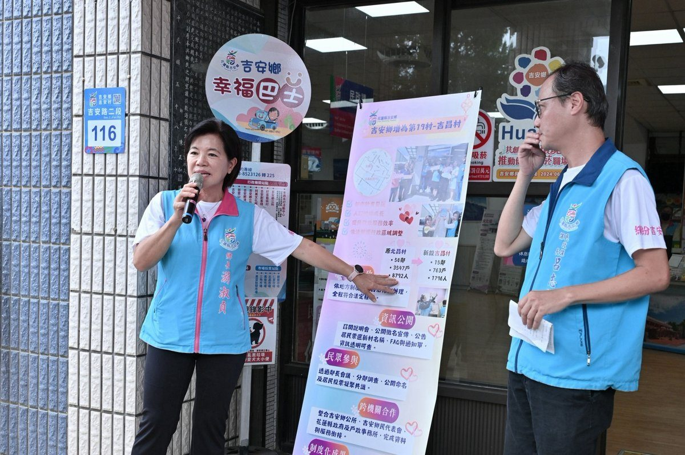
吉安鄉公所在鄉長游淑貞的帶領下，以卓越的廉能治理和智慧施政，榮獲法務部第4屆「透明晶質獎」實地評核。公所推出「QR Code智慧門牌」、殯葬服務數位化等創新措施，展現基層鄉鎮與都會區無異的治理品質，為鄉親建構更值得信賴的…
閱讀全文 →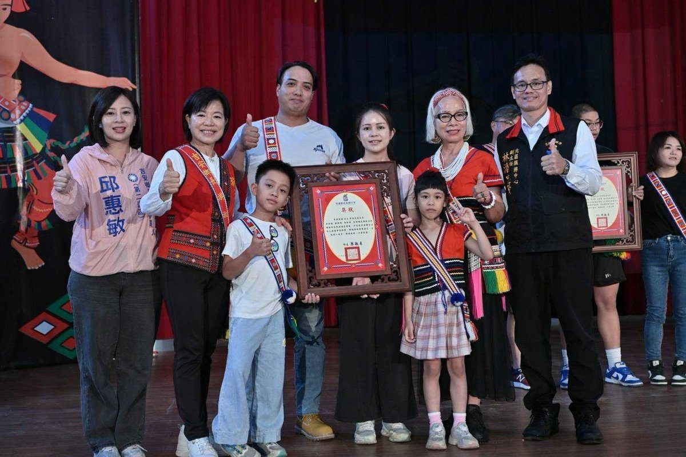
吉安鄉公所於原住民族日舉辦文化傳承與表揚活動，鄉長游淑貞強調土地、語言與歷史為文化根基，致力於推動保留地權益保障、族語復振及文化治理。活動不僅頒發土地權狀，更表揚族語學習家庭，展現吉安鄉對原住民族文化深耕與族群共榮的決心…
閱讀全文 →吉安鄉長游淑貞積極推動原住民族土地正義，四年內成功核發近500張原住民保留地所有權狀。鄉公所嚴謹審查每案，確保族人土地權益穩固，促進多元族群共榮，實踐土地正義與文化傳承。…
閱讀全文 →